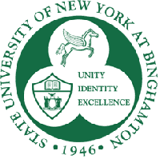
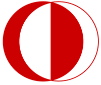
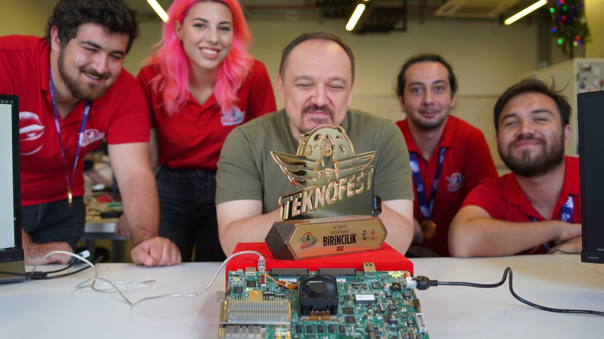
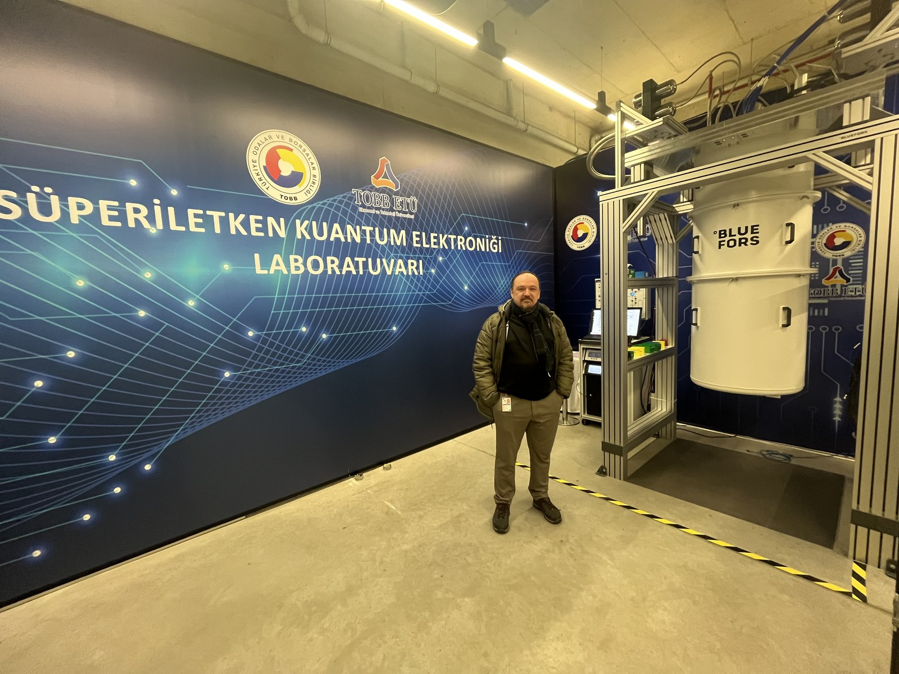
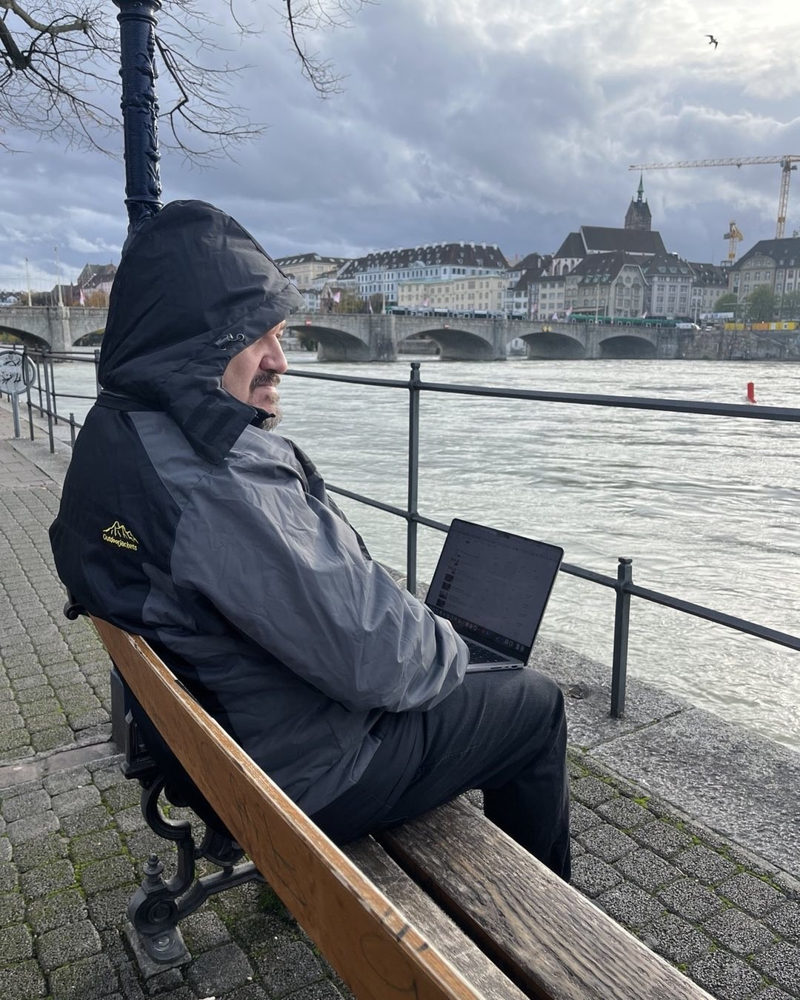
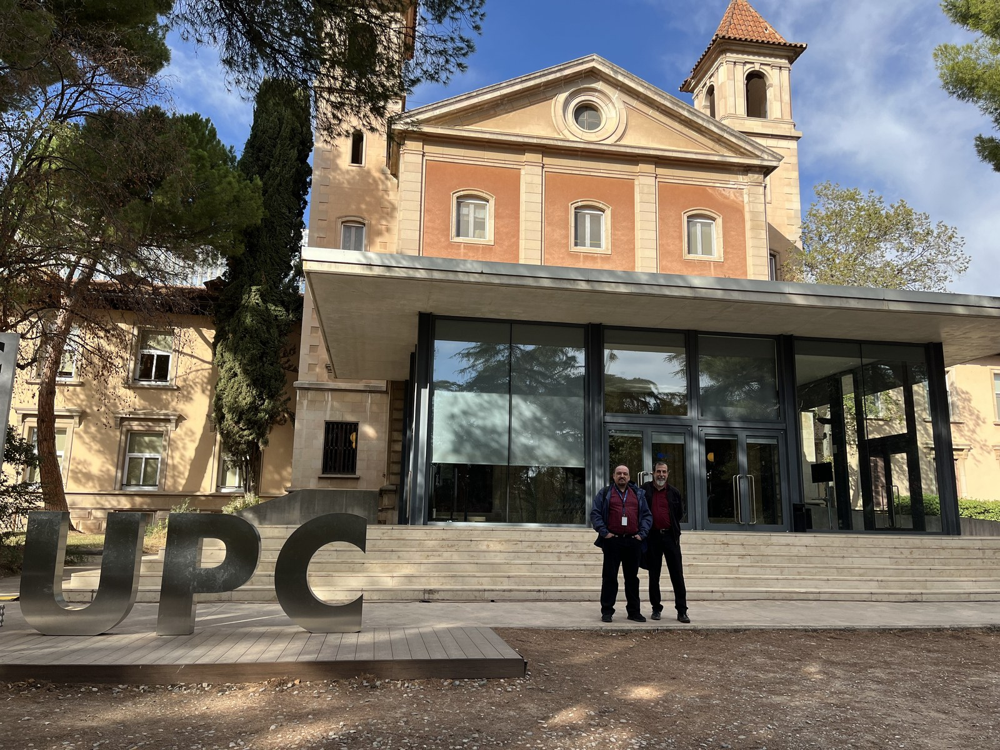
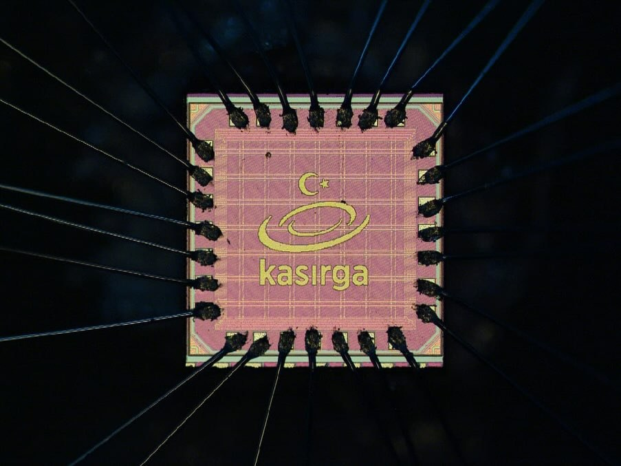
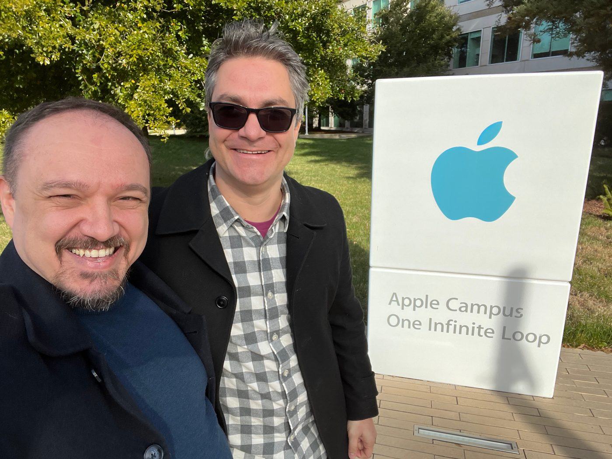
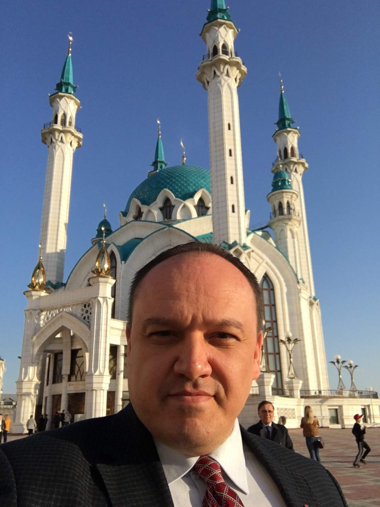

Prof. Dr. Oğuz Ergin
İzmir Bornova'da doğdum, aslen Çanakkaleliyim. Ailem dört yönden de göçle bu topraklara geldi: baba tarafımdan bir kol Selanik'ten, bir kol Filibe ve Karlıova'dan; anne tarafımdan bir kol Prizren'den, bir kol Grevena'dan.
Aileden bana kalan en güçlü iz, kuşaktan kuşağa süren vatan görevi ve dönüş öyküsüdür. Babaannemin dedesi Ali, Yemen'e gitmiş, çok uzun yıllar sonra köyüne dönmüştür. Onun oğlu, babaannemin babası Halil, son dönem Osmanlı askeri olarak Şam'da esir düşmüş, yıllar sonra ailesine kavuşmuştur. Çanakkale Savaşı'nda iki yakın akrabam çarpışmış; biri şehit düşmüş, biri gazi olarak dönmüştür. Babam, 1974'te yirmi üç yaşında genç bir subay olarak Kıbrıs'a gönüllü gitmiştir; yıllar sonra, kısa süreli bir müfettişlik göreviyle Kosova'ya gitmiş, oradayken annemin dedesinin doğduğu Prizren'de bir akrabamız kalmış mı diye araştırmıştır.
Babadedem Faik Ergin ve babaannem Hikmet Ergin Balıkesir Savaştepe Köy Enstitüsü mezunudur. Annemin dedesi Prizren'den mübadeleyle Anadolu'ya gelmiş, Cumhuriyet'te hâkimlik yapmıştır. Annem emekli bir Fransızca öğretmeni, babam ise emekli albaydır; bugün Çanakkale Emekli Subaylar Derneği başkanlığını sürdürmekte, daha önce İstanbul Şişli'de aynı görevi üstlenmiştir.
Çocukluğum babamın tayin yerleriyle Anadolu'ya dağılmıştır. Anaokuluna Denizli'de gittim. İlkokulun ilk iki yılını Gaziantep'in İslahiye ilçesinde, son üç yılını Erzincan'da okudum. Ortaokulu Tekirdağ Anadolu Lisesi'nde, lisenin ilk yıllarını Bursa Fen Lisesi'nde okudum; son sınıfı, babamın Ankara'ya tayini sebebiyle Ankara Ayrancı Lisesi'nde tamamladım. 1996 ÖSYS'de Matematik puan türünden Türkiye 282. olup birinci tercihim Orta Doğu Teknik Üniversitesi Elektrik Elektronik Mühendisliği'ne yerleştim. Doktoramı Binghamton Üniversitesi'nde tamamladım; Intel Barselona araştırma laboratuvarında çalıştığım dönemde askerliğimi dövizle askerlik kapsamında, er olarak Burdur'da yaptım.
İki kızım var; ikisi de eğitimlerini sürdürüyor.
Osmanlı'dan Cumhuriyet'e uzanan, kuşaklar boyu ülkemize hizmet etmiş bir ailenin çocuğuyum. Benim isteğim de, benden öncekilerin yaptığı gibi, ülkeme hizmet etmektir.
Eğitim
| Derece | Alan | Kurum | Yıl |
|---|---|---|---|
| Doktora | Bilgisayar Bilimi |  Binghamton Üniversitesi (SUNY), New York, ABD |
2005 |
| Yüksek Lisans | Bilgisayar Bilimi | Binghamton Üniversitesi (SUNY), New York, ABD | 2003 |
| Lisans | Elektrik-Elektronik Mühendisliği |  Orta Doğu Teknik Üniversitesi, Ankara |
2000 |
Doktora tezi: Register File Optimizations for Superscalar Microprocessors (Süperskaler Mikroişlemciler için Yazmaç Dosyası Eniyilemeleri).
Yüksek lisans tezi: Circuit Techniques for Power-Aware Microprocessors (Güç Bilinçli Mikroişlemciler için Devre Teknikleri).
Akademik Kariyer

Sharjah Üniversitesi, Birleşik Arap Emirlikleri
Bilgisayar Mühendisliği Bölümü, Profesör (Ağustos 2024'ten bugüne)
TOBB Ekonomi ve Teknoloji Üniversitesi, Ankara
- Profesör (Ocak 2018'den bugüne)
- Bilgisayar Mühendisliği Bölüm Başkanı (Temmuz 2016 – Ağustos 2024, sekiz yıl)
- Yapay Zekâ Mühendisliği Bölümü Kurucu Başkanı (Temmuz 2019 – Ağustos 2020)
- Rektör Danışmanı, Stratejik Planlama (Ocak 2015 – Ağustos 2024)
- Yönetim Kurulu Başkan Baş Danışmanı (Kasım 2020 – Aralık 2024)
- Doçent (2012 – 2018), Dr. Öğretim Üyesi (2006 – 2012), Öğretim Görevlisi (2005 – 2006)

Konuk Profesörlük ve Araştırmacılık
- ETH Zürich, İsviçre — Konuk Profesör (Haziran – Kasım 2023)
- Edinburgh Üniversitesi, İngiltere — Araştırma Görevlisi (Mayıs 2015 – Ağustos 2016)
- Notre Dame Üniversitesi, ABD — Konuk Doçent (Ocak – Aralık 2014)
- Türk Harp Akademisi, Ankara — Yarı Zamanlı Profesör (2015-16, 2017-18)

Türk Sanayisi ve Girişimcilik
Türk Savunma ve Havacılık Sanayisinde Danışmanlık
- TAI (Türk Havacılık ve Uzay Sanayi) — Aviyonik Ar-Ge Danışmanı (Haziran 2019 – Eylül 2022)
- ASELSAN — Türk Milli Mikroişlemcisi İşlemci Çekirdeği Tasarımı, Ar-Ge Danışmanı (Ekim 2017 – Ekim 2019)
- Bilişim Vadisi (Teknoloji Geliştirme Bölgesi) — Teknoloji Danışma Kurulu Üyesi (Şubat 2000'den bugüne)
Sanayi Araştırmacılığı
- Intel Barcelona Araştırma Merkezi (IBRC), İspanya — Kıdemli Araştırma Bilimcisi (Eylül 2004 – Kasım 2005)
- Global Supercomputing Corporation, Eskişehir — Donanım Tasarım Ekip Lideri (2007 – 2009)

Kurduğum Şirketler
- Kasırga Information Systems Ltd., Ankara — Kurucu ve CEO (2009 – 2017). KOSGEB destekli teknoloji girişimi.
- Yumruk Space and Defense Ltd., Ankara — Kurucu ve CEO (2010 – 2015). Sanayi Bakanlığı tarafından desteklenen savunma ve uzay teknolojileri girişimi.

Şirket kurmak, büyütmek ve gerektiğinde batırmayı göze almak; bürokrasiyle, vergi dairesiyle, KOSGEB başvurularıyla, yatırımcı görüşmeleriyle birinci elden uğraşmak benim için kuramsal bilgi değil, yaşanmış deneyim.
Akademik Üretim
Bilgisayar mimarisi ve mikroişlemci tasarımı alanlarında uluslararası hakemli dergi ve konferans yayınlarıyla tutarlı bir üretim profili. 11 patent, ülkemizin teknoloji bağımsızlığına doğrudan katkı veren çıktıların somut göstergesi.
| Tür | Sayı |
|---|---|
| Toplam yayın | 123 |
| Konferans bildirisi | 52 |
| Hakemli dergi makalesi | 34 |
| Patent | 11 |
| Kitap | 3 |
h-endeksi ve atıflar (2026)
| Veritabanı | h-endeksi | Atıf sayısı |
|---|---|---|
| Google Scholar | 30 | 3.045 |
| Scopus | 20 | 1.421 |
| Web of Science | 15 | 920 |
Kitaplarım
- Bilgisayar Mimarisi: RISC-V Tabanlı Yaklaşım (2026, 401 sf, açık erişim).
Türkçe'de bilgisayar mimarisi alanındaki ilk RISC-V tabanlı, ücretsiz erişilebilir ders kitabı. CC BY-NC-ND 4.0 lisansıyla yayınlandı.
bilgisayar-mimarisi.oguzergin.net - Intel 8086 ile Mikroişlemci Programlamaya Giriş (2026, 252 sf, açık erişim; Şadi Çağatay Öztürk ile birlikte).
8086 mikroişlemci ailesi üzerinden mikroişlemci mimarisi ve çevirici dili programlama. ISBN: 978-625-00-5838-1.
mikroislemciler.oguzergin.net - Java: Bilgisayar Programlamaya Giriş (Ali Yazıcı, Erdoğan Doğdu, A. Murat Özbayoğlu, Y. Murat Erten ile birlikte; Palme Yayıncılık, 2007).
Türkçe bilgisayar mühendisliği eğitiminin yaygınlaşması için açık erişim ilkesini ön planda tutuyorum.
Bilim İnsanı Kimliği
Araştırma alanlarım: Mikroişlemci mimarileri, DRAM güvenliği, dar değerli sayılar (narrow-width values), enerji verimli devre tasarımı, yapay zekâ destekli sistemler.
Yetiştirdiğim öğrenciler: TOBB ETÜ Bilgisayar Mühendisliği Bölümü'nün kuruluşundan bugüne yüzlerce mezunla birebir çalıştım. Önemli bir bölümü bugün ABD'de profesör, Avrupa'da kıdemli mühendis ya da Türk teknoloji sanayisinde lider konumda.
Uluslararası işbirlikleri ve diaspora bağı: İki on yılı aşkın akademik kariyerim boyunca Avrupa, ABD ve Asya'daki üniversite ve araştırma merkezleriyle ortak proje, ortak yayın ve ortak öğrenci yetiştirme süreçleri yürüttüm. ETH Zürich, Notre Dame ve Edinburgh başta olmak üzere konuk araştırmacı olarak çalıştığım kurumlardaki bağlar, Türkiye'den dünyaya açılan akademik bir köprü kurdu. Yetiştirdiğim öğrencilerin önemli bir bölümü Avrupa ve ABD'nin önde gelen teknoloji kurumlarına dağıldı; bugün dünyanın farklı kıtalarında Türk akademik diasporasının görünür bir parçası olarak çalışıyor. Onlarla kurduğum bağ bugün de canlı; bu birikimi Türkiye'ye geri çağırmak somut bir hedef.

Akademik akreditasyon görüşüm: "Önemli olan diplomanın geçerliliği değil, mezunun geçerliliğidir." Bu ilkeyi Bilgisayar Mühendisliği Bölümü'nün TOBB ETÜ'deki tasarımında ön planda tuttum.
Neden Bu Kampanya?

Yurt içi ile yurt dışı arasında, akademi ile sanayi arasında, mühendislik ile yönetişim arasında bir köprü kurmaya yıllarımı verdim. Bugün vardığım nokta şu: Türkiye'nin önündeki sorunların çoğu çözülemez değil, çözen yok. Bilim, liyakat ve ölçülebilir hedef üçgeninde yönetilen bir devlet mümkündür. Bu mümkünlüğü göstermek için bu yola çıktım.
10 başlık, 10 taahhüt · Tersine beyin göçü vaatlerim
Bağlantılar
Akademik Profiller
- ORCID: 0000-0003-2701-3787
- Google Scholar: scholar.google.com/citations?user=NSuo6qgAAAAJ
- DBLP: dblp.org/pid/48/389
- ResearchGate: Oguz-Ergin
- GitHub: prof-oguzergin
Kişisel ve Sosyal Medya
- Web: oguzergin.net
- E-posta: bilgi@oguzergin.net
- YouTube Kanal: @oguz_ergin
- LinkedIn: oguzergin
- X (Twitter): @oguzergin
- Instagram: @prof.dr.oguzergin